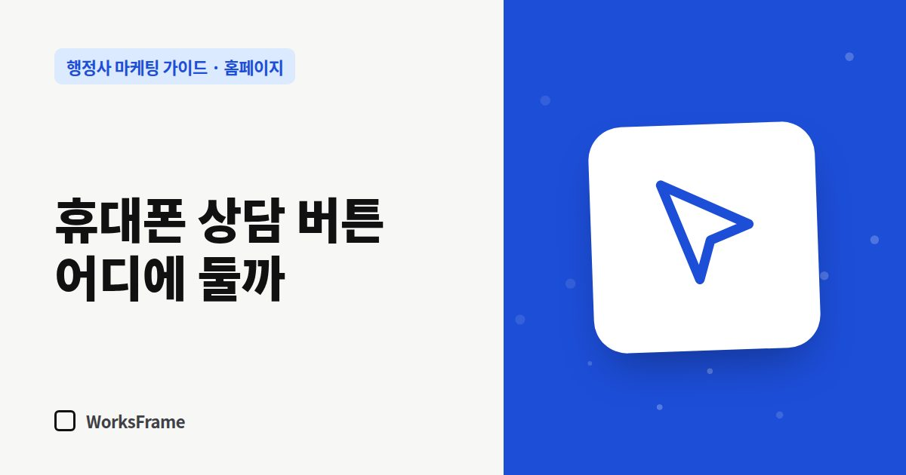

홈페이지
휴대폰에서 상담 버튼, 어디에 둬야 할까 — 행정사 홈페이지 모바일 점검
한 줄 답
휴대폰 화면 맨 아래에 전화·카톡·문의 버튼을 늘 보이게 고정하세요. 그리고 누르면 바로 걸리는지 직접 눌러 확인하세요.

검색으로 들어온 고객은 대부분 휴대폰을 들고 있습니다. 컴퓨터 화면에서는 멀쩡해 보여도, 휴대폰에서 전화 버튼을 찾으려 스크롤을 세 번 해야 한다면 그사이 고객은 뒤로 가기를 누릅니다.
버튼은 화면 아래에 늘 보이게
휴대폰 화면 맨 아래에 고정된 버튼 줄을 두는 방식이 가장 확실합니다.
| 버튼 | 누르면 | 추천 |
|---|---|---|
| 전화 | 바로 전화 걸기 | 방문·급한 업무가 많은 사무소 |
| 카톡 | 카톡 채널 대화 | 사진·서류를 먼저 보내는 업무 |
| 문의 | 문의 폼으로 이동 | 야간·주말 문의가 많은 사무소 |
두세 개면 충분합니다. 네 개 이상은 오히려 고르기 어렵습니다.
모바일에서 꼭 눌러 볼 것
- 전화 버튼을 누르면 전화 앱에 번호가 바로 뜨는지
- 카톡 버튼이 앱으로 열리는지
- 문의 폼 입력칸이 키보드에 가려지지 않는지
- 글자가 너무 작아 확대해야 하지 않는지
- 표가 화면 밖으로 삐져나가 옆으로 밀리지 않는지
버튼 문구는 행동으로
“Contact”나 “문의”보다 “전화 상담”, “카톡으로 서류 보내기”처럼 누르면 무슨 일이 생기는지 알려 주는 말이 좋습니다.
업무 페이지 끝에도 한 번 더
업무 안내를 끝까지 읽은 사람은 연락할 준비가 된 사람입니다. 페이지 끝에 “이 업무 상담하기” 버튼을 두세요.
자주 묻는 질문
하단 고정 버튼이 화면을 가리지 않나요?
높이를 낮게 하고 본문 아래쪽에 여백을 두면 가리지 않습니다. 대부분의 방문자에게는 가려지는 불편보다 바로 연락하는 편리함이 큽니다.
상담 시간이 아닐 때 전화가 오면요?
부재중 자동 문자를 설정하고, 야간에는 카톡이나 문의 폼으로 안내하세요. 상담 시간을 버튼 근처에 적어 두면 좋습니다.